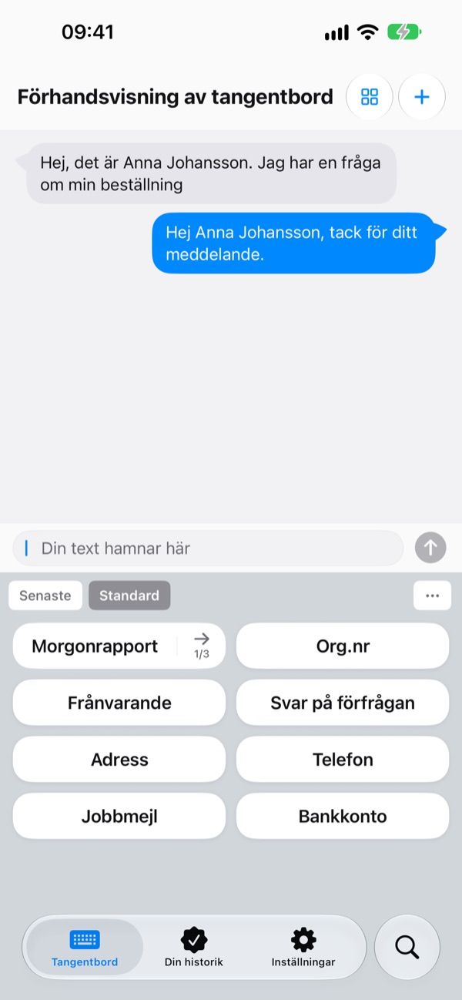
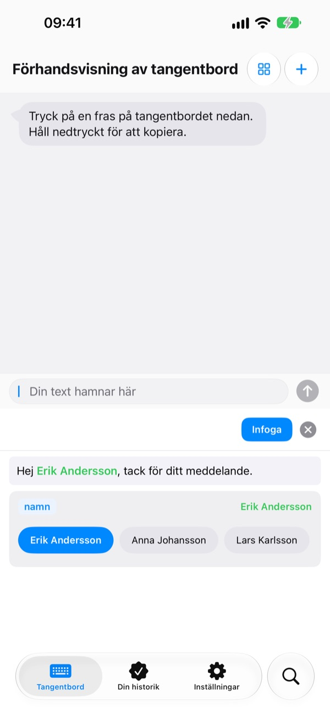
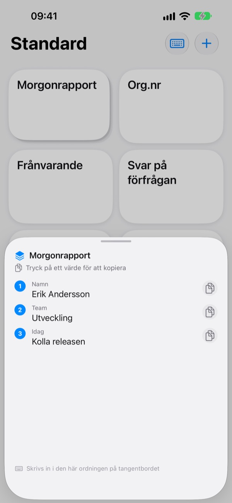
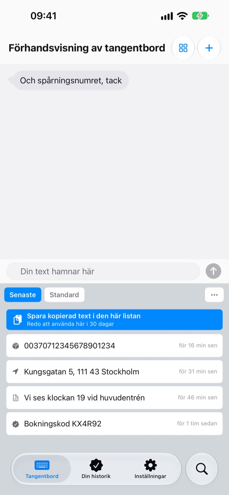
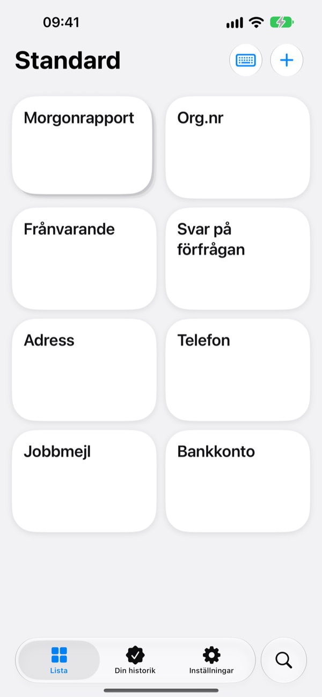

Sluta skriva
samma sak om igen
Spara ditt kontonummer, din adress eller din vanliga mejlinledning en gång. I Meddelanden, Mail, Safari och överallt där du skriver finns de ett tryck bort på tangentbordet.
Alla funktioner är gratis för de första 100 infogningarna.

Testa direkt här
Det här är appens egen skärm Förhandsvisning av tangentbord. På din iPhone dyker tangentbordet upp överallt där du kan skriva.
Hur många gånger har du skrivit ditt kontonummer i dag?
En kompis undrar vart hen ska skicka sin del, så du öppnar bankappen och kopierar numret. Sedan knappar du in leveransadressen bokstav för bokstav, igen, och skriver samma hälsning i varje kundmejl. ClipKeyboard håller de raderna redo på tangentbordet, ett tryck bort.
Fyll bara i det som ändras
Mallar lämnar delarna som ändras, som {namn} eller {datum}, som tomma fält.
När du infogar en mall frågar den bara efter fälten, och du kan välja ett värde du har använt tidigare.

Flera värden i tur och ordning
En stapel samlar flera värden, till exempel namn, team och dagens uppgift, på en enda tangent.
Tryck för att infoga den aktuella platsen och gå vidare till nästa med pilen bredvid.

Det du kopierar finns också på tangentbordet
Spårningsnumret, adressen eller telefonnumret du just kopierade hamnar på fliken Senaste i tangentbordet.
Mejladresser, telefonnummer, adresser, kortnummer och IBAN känns igen och sorteras, så att du hittar dem igen på en sekund.

Lås in det känsliga
Gör pass- och kortnummer till säkra fraser som låses med Face ID.
Har du ett kontonummer på papper? Ta ett foto och dra fingret över just de tecken du behöver.

Kom igång i tre steg
- 1
Lägg till tangentbordet
Inställningar > Allmänt > Tangentbord > Tangentbord > Lägg till tangentbord och välj ClipKeyboard.
- 2
Tillåt full åtkomst
Tangentbordet behöver det för att kunna läsa fraserna du har sparat i appen. Det du skriver lämnar aldrig din enhet.
- 3
Håll in jordgloben för att byta
Håll in 🌐 på tangentbordet i valfri app, välj ClipKeyboard och tryck på en tangent.
Det här kan du ha på tangentbordet
- Fras
- Infogar exakt det du sparat, radbrytningar och emoji inräknade.
- Mall
- Fält inom klammerparenteser, som {namn}, fylls i varje gång du infogar den.
- Stapel
- Flera värden på en tangent. Pilen går vidare till nästa plats.
- Säker fras
- Infogas först efter Face ID eller Touch ID. (Pro)
- Bildfras
- Tryck för att kopiera bilden och klistra sedan in den i meddelandet.
- Urklippshistorik
- Sparar det du kopierar, sorterat efter typ och redo att användas igen.
- Skanna in text
- Svep över text i ett foto för att bara ta med den delen. Fotot sparas inte.
Hela användarguiden finns på m1zz.github.io/ClipKeyboard/sv/tutorial.html.
Använd den 100 gånger, bestäm dig sedan
Gratis
- Alla funktioner tills du har infogat fraser 100 gånger
- Allt du har skapat fortsätter att fungera efter det
- Nya objekt: upp till 10 fraser, 3 mallar, 3 staplar och 5 bilder
- 50 objekt i urklippshistoriken
Plus · Pro
- Plus: obegränsat med fraser, mallar, staplar och bilder, 100 objekt i urklippshistoriken
- Pro: allt i Plus samt iCloud-säkerhetskopia, Face ID-lås och synkronisering mellan enheter (beta)
Båda finns som årsprenumeration eller som ett engångsköp som gäller för alltid.
Dina fraser raderas aldrig, inte ens om du inte betalar eller en prenumeration löper ut. Ingen reklam.
Frågor
Mina fraser syns inte på tangentbordet.
Full åtkomst är förmodligen avstängd. Gå till Inställningar > Allmänt > Tangentbord > Tangentbord > ClipKeyboard och slå på Tillåt full åtkomst.
Kan jag behålla mitt vanliga tangentbord?
Ja. När en fras har infogats byter ClipKeyboard tillbaka till tangentbordet du använde, och det går att stänga av i inställningarna. Du kan också skriva med ClipKeyboard: det har tangenter som på iPhone på 23 språk.
Kan jag skriva japanska eller kinesiska?
Japanska upp till kana och kinesiska upp till pinyin och zhuyin. Omvandling till kanji och hanzi finns inte än.
Det jag kopierar syns inte i historiken.
iOS hindrar andra appar från att läsa urklippet på egen hand. Öppna appen en gång och använd sedan tangentbordet, så dyker det upp.
Hur raderar jag värden som sparats för en mall?
Tryck på ett fält i mallredigeraren för att se dess sparade värden. Svep på ett värde för att radera det.
Vad händer efter 100 infogningar?
Alla fraser, mallar och staplar du har skapat fortsätter att fungera. Gratisgränserna gäller bara nya objekt. Välj Plus eller Pro om du vill ta bort dem.
Skickas mina fraser någonstans?
Nej. De lagras på den här enheten och vi samlar inte in innehållet. Med iCloud-säkerhetskopia påslagen sparas de krypterat i din egen iCloud. Vi samlar bara in anonym användningsstatistik för att förbättra appen och använder inga analysverktyg från tredje part.
Hur gör jag när jag byter telefon?
Med iCloud-säkerhetskopian i Pro påslagen återställer du på den nya enheten med samma Apple-konto. Bildfraser följer med. Återställningen ersätter de fraser som redan finns på enheten.
Fungerar det på iPad?
Ja, på både iPhone och iPad.
Mitt problem finns inte med här.
Mejla oss nedan och berätta vad som hände. Vi svarar oftast inom ett dygn.
Frågor eller synpunkter? Skriv till leeo@kakao.com.